散布図行列
ScatterMatrix
概要
散布図行列は、行列形式で表した変数の散布図を対としていくつか構成したものです。変数に相関性があるか、相関が正か負かを決定するのに使用できます。このチュートリアルは、散布図行列を作成する方法を説明します。
- 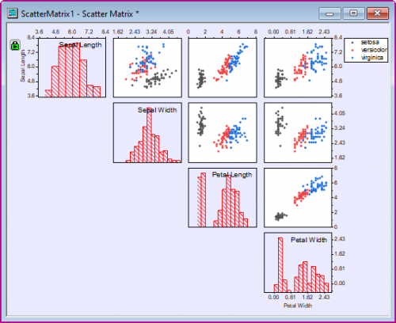
学習する項目
- ヒストグラムと共に散布図行列を作図する
- 散布図行列を編集する
- 色インデックスを表示するためにグループ化する範囲を設定する
- 上下の対格にある隠れた散布プロットを特定する
ステップ
散布図行列を作図する
- 新しいワークブックを用意します。ヘルプ: フォルダを開く: サンプルフォルダを選択して、サンプルフォルダを開きます。このフォルダ内のStatisticsサブフォルダにあるFisher's Iris Data.dat ファイルを探します。空のワークシートにファイルをドラッグアンドドロップしてインポートします。
- 列AからDまでを選択し(列Eは選択しません)、メインメニューから作図：統計グラフ：散布図行列と操作します。
- ダイアログ内の対角のセルに表示ドロップダウンリストからヒストグラムを選択し、目盛とラベルを表示のドロップダウンリストから、交互を選択します。
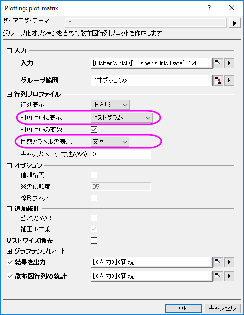
- OKをクリックしてダイアログを閉じます。散布図行列のPlotData1シートが作成され、元のデータと同じワークブックに追加されます。このワークシートには、散布図行列のそれぞれのグラフ用のデータが格納され、ワークブック下部のPlotData1タブをクリックすることで開いて確認することができます。グラフは次のようになります：
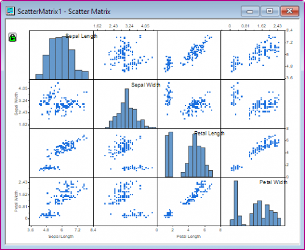
 | 散布図ごとに線形近似を実行し、調整済みのR二乗を計算し、さらにPearsonの相関係数（Pearsonのr）を計算することもできます。Origin 2019以降、これらの統計はアクティブブックのシートに出力され、ScatterMatrixStatsNという名称がつけられます。
散布図行列の各プロットにAdjのラベルを付けます。追加の統計の下にあるボックスをチェックして、R-SquareまたはPearsonのr値を表示します。
- 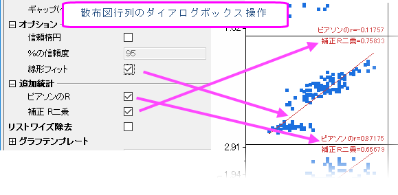
|
散布図行列を編集する
散布図行列は複数のレイヤに分かれています。このセクションでは、背景色、データプロットの種類と色、散布図行列の目盛ラベルの編集方法を示します。Origin 2016以降、デフォルトで、1つのレイヤの印刷スタイルまたは軸設定を変更すると、他のすべてのレイヤが続きます（個別の編集については、このセクションの最後にあるヒントを参照してください）。
- 散布図をダブルクリックして、作図の詳細ダイアログを開きます。シンボルの色を変更するには、シンボルの色ドロップダウンメニューで指定色オプションを選択してから目的の色を選びます。次の図のようにシンボルの種類と色を選択して、OKボタンをクリックします。
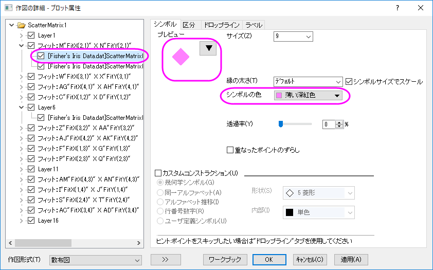
- ヒストグラムのパターンを編集するには、レイヤ1の下のプロットを選択してパターンタブを編集します。次の図のように、縁の色を赤に、塗りつぶしをなしに、パターンを中に設定します。OKボタンをクリックします。
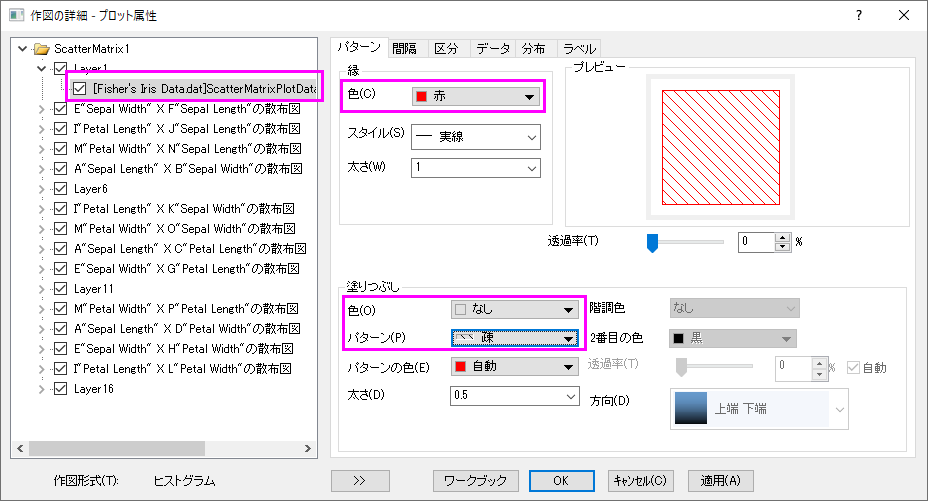
この変更はこのグラフの全ての散布データに適用されます。
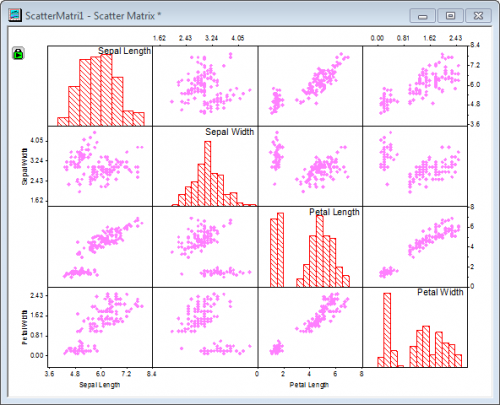
- ウィンドウ全体の背景色を変更するには、フォーマット：作図の詳細（ページ属性）と操作し、作図の詳細ダイアログを表示します。同じダイアログを表示するのに、散布図行列内をダブルクリックしても開くことが出来ます。 表示]ブで、色ドロップダウンをクリックし、カスタムの下の空欄色をクリックします。これにより、色ダイアログボックスが開き、カスタム色を定義できます。
- 色の設定ダイアログで、色を赤= 235、緑= 235、青= 255として指定し、OKをクリックします。
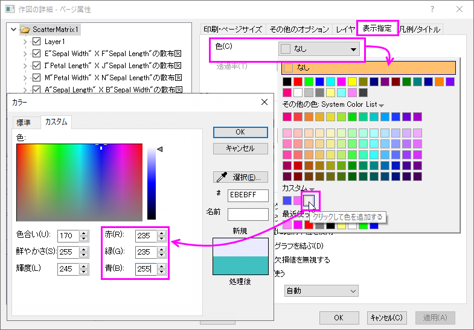
- ヒストグラムまたはグラフの残りの部分の背景色を変更せずに散布図レイヤの背景色を変更するには、散布図をダブルクリックして、作図の詳細ダイアログを開きます。背景タブをクリックして開き、色を白にします。
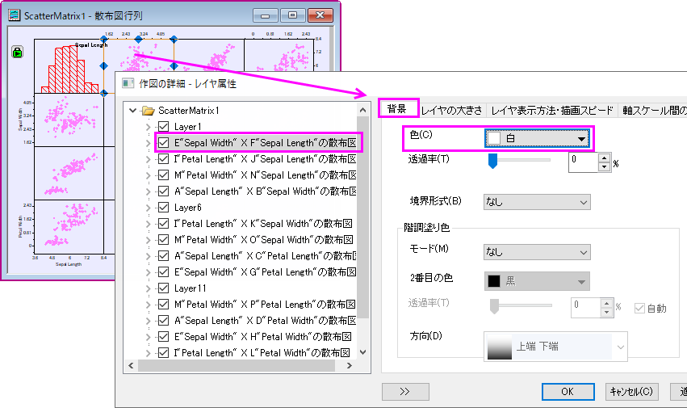
そしてダイアログ内の OK ボタンをクリックします。散布データプロットがある全てのレイヤに対してこの変更が反映されます。
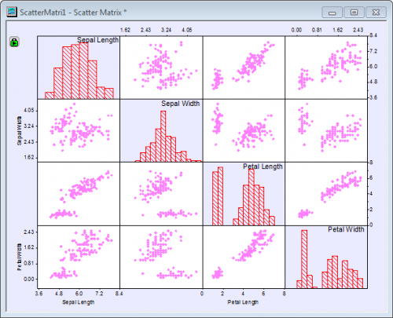
- 下にある軸の目盛ラベル上でダブルクリックし、軸ダイアログを開きます。目盛ラベルタブを開き、左側パネルで上軸アイコンが選択されていることを確認します。フォーマットタブのフォントのサイズを36に設定します。適用をクリックします。
- 左パネルで、適用先ボタンをクリックし、適用先ダイアログを表示します。今行った設定がウィンドウ内の他の軸にも適用されるよう、以下のように設定します。OKをクリックして、作図の詳細ダイアログボックスを閉じます。
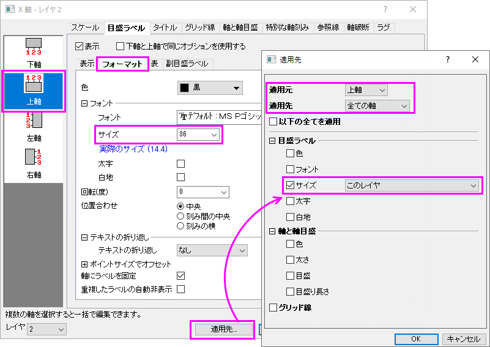
- 下図のようなグラフになります。
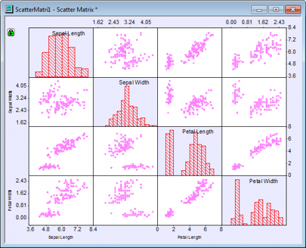
グループ 範囲の追加
現在、散布図は変数Sepal Length、Sepal Widthなどのペアワイズ比較を示しています。散布図から明らかではないのは、3種類のIrisで測定が行われたことです。すべての散布点は同じように見えるので、種を区別することはできません。ペアワイズ比較で種の効果を確認できるように、元のワークシートのSpecies列（グラフ作成時に除外した列）を使用して各散布点に色を付けます。
- プロットに種情報を追加するには、グラフウィンドウの左上隅にある緑色のロックアイコンをクリックしてください。 パラメータの変更を選択し、Plotting: plot_matrixダイアログを再度開きます。
- グループ化範囲の横にある三角ボタン
 をクリックし、E（Y）：Speciesを選択してからOKをクリックします。
をクリックし、E（Y）：Speciesを選択してからOKをクリックします。
- Plotting: plot_matrixダイアログのOKボタンをクリック します。 下図のようなグラフになります。
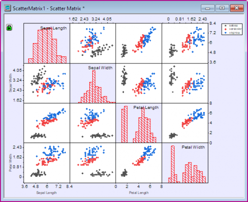
行列表示の編集
散布図の表示オプションの1つは、散布図の半分を非表示にすることです（散布図の他の半分と同じ情報が繰り返されるため）。
- 散布図グラフの対角線の下にあるレイヤーを非表示にするには、左上隅にある緑色のロックアイコンをクリックします。 パラメータの変更を選択し、Plotting: plot_matrixダイアログを再度開きます。
- ダイアログの行列プロファイルのブランチにある、
- 行列表示のドロップダウンリストから、上三角形を選択します。
- 目盛とラベルの表示のドロップダウンリストからすべてを選択します。
- ギャップ（ページ寸法の％内）のテキストボックスに２を入力します。
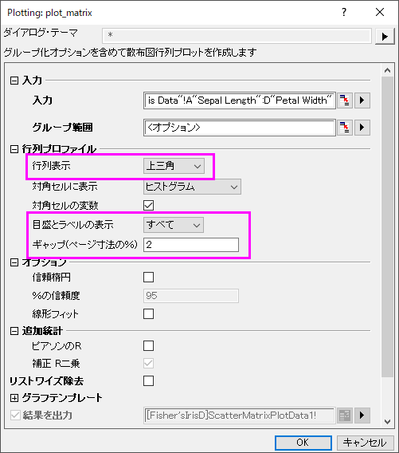
最終的に、下図のようなグラフになります。